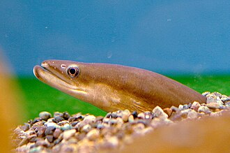

うなぎ（鰻）の生産量 都道府県ランキング
全24県の順位と、とれた量
うなぎが日本でいちばん多く育てられているのは鹿児島県です。7,150 tで、全国（1万6,674 t）の43%を占めます。

| 順位 | 都道府県 | 収獲量 | 全国に占める割合 |
|---|---|---|---|
| 1位 | 鹿児島県 | 7,150 t | 43% |
| 2位 | 愛知県 | 4,255 t | 26% |
| 3位 | 宮崎県 | 2,635 t | 16% |
| 4位 | 静岡県 | 1,806 t | 11% |
| 5位 | 三重県 | 230 t | 1.4% |
| 6位 | 熊本県 | 154 t | 0.9% |
| 7位 | 高知県 | 122 t | 0.7% |
| 8位 | 徳島県 | 121 t | 0.7% |
| 9位 | 山梨県 | 68 t | 0.4% |
| 10位 | 千葉県 | 43 t | 0.3% |
| 11位 | 愛媛県 | 37 t | 0.2% |
| 12位 | 長崎県 | 12 t | 0.1% |
| 13位 | 福岡県 | 9 t | 0.1% |
| 14位 | 群馬県 | 5 t | 0.0% |
| 15位 | 大分県 | 5 t | 0.0% |
| 16位 | 埼玉県 | 4 t | 0.0% |
| 17位 | 和歌山県 | 4 t | 0.0% |
| 18位 | 香川県 | 4 t | 0.0% |
| 19位 | 大阪府 | 3 t | 0.0% |
| 20位 | 岡山県 | 2 t | 0.0% |
| 21位 | 広島県 | 2 t | 0.0% |
| 22位 | 福島県 | 1 t | 0.0% |
| 23位 | 新潟県 | 1 t | 0.0% |
| 24位 | 奈良県 | 1 t | 0.0% |
うなぎの生産量の推移（令和2年〜令和6年）
全国の収獲量は、令和2年の1万6,806 tから令和6年の1万6,674 tへ、ほとんど変わっていません。この間、1位はずっと鹿児島県です。
| 年 | 全国 | 1位 | 2位 | 3位 |
|---|---|---|---|---|
| 令和6年 | 1万6,674 t | 鹿児島県7,150 t | 愛知県4,255 t | 宮崎県2,635 t |
| 令和5年 | 1万8,341 t | 鹿児島県7,852 t | 愛知県3,810 t | 宮崎県3,358 t |
| 令和4年 | 1万9,167 t | 鹿児島県7,858 t | 愛知県4,205 t | 宮崎県3,574 t |
| 令和3年 | 2万673 t | 鹿児島県8,772 t | 愛知県5,288 t | 宮崎県3,554 t |
| 令和2年 | 1万6,806 t | 鹿児島県7,057 t | 愛知県4,315 t | 宮崎県2,856 t |
この数字について
- 分類：川や湖の魚
- 全国の収獲量：1万6,674 t
- この数字が表すもの：収獲量（養殖で育てて取り上げた重さ）
- 調査：内水面漁業生産統計調査（内水面養殖業） 令和6年
- この品目は川や湖の養殖の統計です。
- 24県分を調査（調査していない県は順位に入りません）
うなぎの生産量について、よくある質問
- うなぎの生産量が日本一の都道府県はどこですか？
- 鹿児島県です。内水面漁業生産統計調査（内水面養殖業）（令和6年）で7,150 tでした。
- うなぎの生産量ランキング2位・3位はどこですか？
- 2位は愛知県（4,255 t）、3位は宮崎県（2,635 t）です。
- うなぎの生産量ランキング4位・5位はどこですか？
- 4位は静岡県（1,806 t）、5位は三重県（230 t）です。うなぎの全24県の順位は上の表のとおりです。
- うなぎの全国の生産量はどれくらいですか？
- 1万6,674 t（令和6年）です。